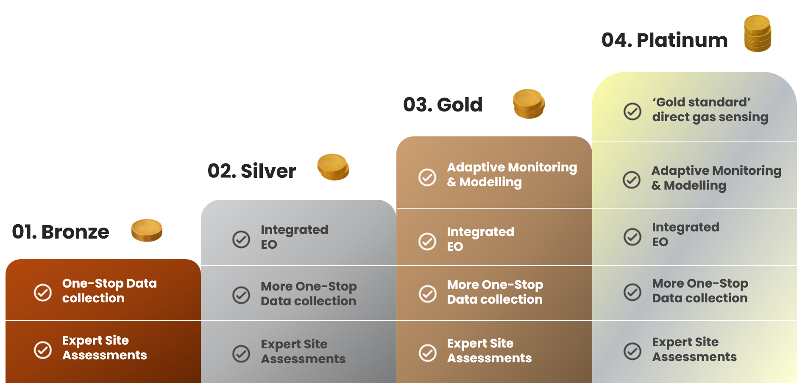

Live Data Fields
View live sensor values, telemetry status, and field conditions in one place.
Choose the level of support that fits your project.
Choose the tier that matches your project’s maturity, monitoring budget, risk profile, and reporting requirements.

| Feature | Bronze | Silver | Gold | Platinum |
|---|---|---|---|---|
| One-stop Data Collection | ✓ | ✓ | ✓ | ✓ |
| Expert Site Assessment | ✓ | ✓ | ✓ | ✓ |
| Integrated EO | ✓ | ✓ | ✓ | |
| Adaptive Monitoring & Modelling | ✓ | ✓ | ||
| Advanced Carbon Monitoring & Assessment | ✓ |
A cost-efficient baseline suitable for projects seeking foundational environmental metric monitoring (e.g. one or two parameters) across all management zones. Bronze provides continuous data collection with basic redundancy, ensuring at least one reliable data stream per zone. Ideal for early stage projects or landscapes with lower variability.
Silver increases spatial representation and statistical robustness with additional sensors per zone. Limited EO analysis introduced to support greater understanding of landscapes spatial variation, improving output accuracy and sensor placement. A strong balance between cost and confidence.
Gold delivers high density sensor networks and more sensor types, predictive modelling pipelines, more EO analyses, and verification ready outputs. This tier significantly reduces risk of data gaps and provides high confidence carbon assessments, by using consensus of different environmental metrics.
Platinum offers the most detailed monitoring package, with very high spatial resolution and maximum redundancy. Advanced EO integration and modelling provide the highest certainty in hydrology and carbon estimates. Best suited for large, complex, or high value projects where uncertainty must be minimised.
The client dashboard turns site data into clear, actionable insight. As tiers increase, the dashboard experience becomes more sophisticated and reflects the level of service selected.
View live sensor values, telemetry status, and field conditions in one place.
Explore trends through clear, interactive visualisations designed for fast interpretation.
Access reporting outputs and evidence packs aligned with assurance and verification needs.
Features scale with your chosen tier, from essential views to advanced analysis capability.
Some of the most common questions we hear from project managers and landowners before getting started.
Each tier builds on the last by increasing the density of sensors per management zone, the depth of Earth Observation integration, and the sophistication of the modelling pipeline. Bronze provides a reliable baseline with essential water-table data. Silver adds spatial robustness and EO-supported hydrology surfaces. Gold introduces predictive modelling and high-confidence, verification-ready outputs. Platinum delivers the highest resolution and maximum redundancy for complex or high-value projects. The right tier depends on your site's variability, your reporting requirements, and the level of certainty you need.
This typically depends on the terms of your land ownership or rental agreement rather than a formal planning application. Our dipwells are unobtrusive ground-level installations and in most cases do not require planning permission, but we recommend checking your lease or management agreement before deployment. We're happy to advise during the scoping stage.
Sensors transmit readings wirelessly via LoRaWAN — a low-power, long-range network well-suited to remote landscapes. A gateway installed on or near the site connects to the wider LoRaWAN infrastructure and forwards data to our processing platform, where it is validated and made available through your dashboard in near real time.
Most installations are completed in a single coordinated field campaign lasting one to two days, depending on site size and accessibility. The scoping phase beforehand ensures everything is planned and prepared in advance, so the field visit runs efficiently. Commissioning and dashboard access typically follow within a few days of installation.
We continuously monitor each sensor's status, connectivity, and battery level remotely, so issues are identified quickly without waiting for a scheduled visit. Routine field calibration visits also include checks for physical damage to sensors and dipwells. Where damage has occurred — for example from livestock — we can repair or replace equipment, and implement protective measures such as fencing where needed. In some cases this may involve additional cost, which we would discuss with you transparently.
Yes. While our peatland hydrology monitoring is particularly well developed, Cwiri's modular framework supports woodland carbon projects too. The sensor types, telemetry infrastructure, and reporting pipelines are adaptable to the specific monitoring requirements of woodland schemes, including those registered under the Woodland Carbon Code.
We produce structured, auditable datasets and reporting that align with the evidence requirements of both the Peatland Code and Woodland Carbon Code. Higher monitoring tiers provide greater spatial confidence and model-backed carbon assessments, which reduces uncertainty at verification and strengthens the credibility of your carbon claims.
The sensor count is flexible and can be tailored to your budget and timeline. More sensors across your site will yield comprehensive data faster, while fewer sensors can still build a robust dataset — it simply takes longer to achieve spatial coverage. Our adaptive monitoring approach maximises the value of the sensors installed, therefore you should start with a practical amount of sensors and relocate sensors to new zones once adequate data has been collected in the initial areas. This mobile strategy extends the overall acquisition timeline but can reduce upfront costs. During scoping, we'll discuss your budget, timeline, and spatial priorities to recommend the approach that works best for your project.
Your main responsibilities are to provide access and information. We'll ask you to share existing field data (e.g., previous water table records, soil surveys, or habitat assessments) and detailed site information (zoning, accessibility, landscape features) to inform our scoping. You'll also need to provide site access during our assessment and during the installation phase. Cwiri handles the technical implementation — including LoRaWAN gateway installation, sensor procurement, configuration, and ongoing data processing. For most projects, your involvement is collaborative: sharing data upfront, facilitating site access, and reviewing the dashboard during rollout.
We keep onboarding simple and practical. In one short conversation, we can scope your site, recommend an appropriate monitoring approach, and outline clear next steps.
Tell us about your project, site context, and reporting goals. We will quickly confirm whether Cwiri is the right fit and what level of monitoring makes sense.
We assess site size, zone layout, accessibility, connectivity, and risk profile to design the most appropriate monitoring setup for your timeline and budget.
You receive a clear proposal with recommended configuration, delivery plan, and transparent pricing. Everything is itemised and agreed before any deployment begins.
Our field team installs and commissions the network, then supports QA/QC, maintenance, and reporting so you have dependable data throughout your project lifecycle.
Prefer to start by email? Share your site details and we will suggest the best next step.